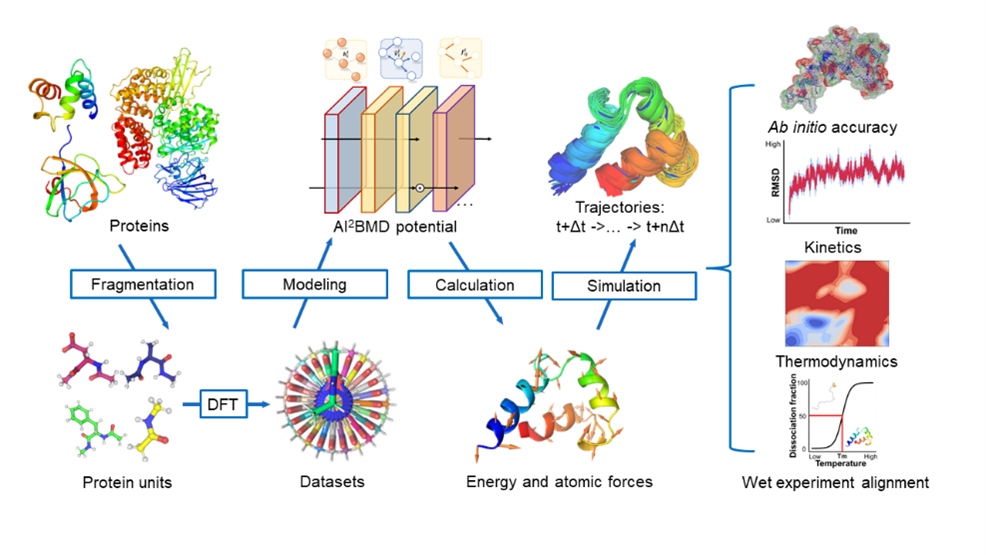
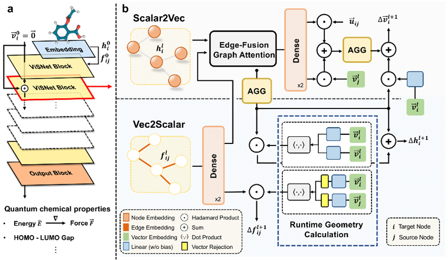
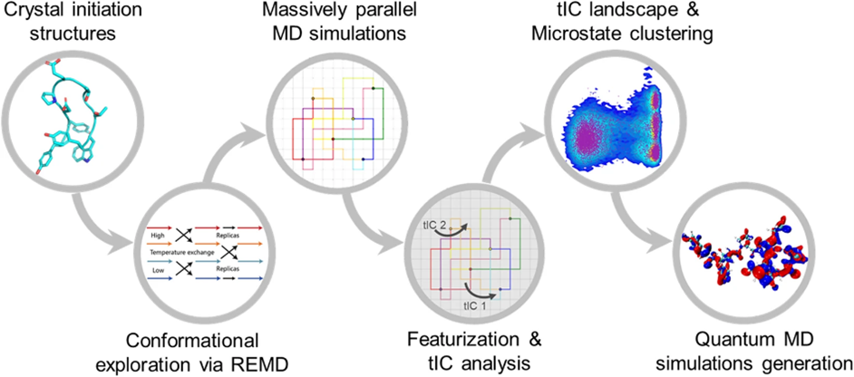
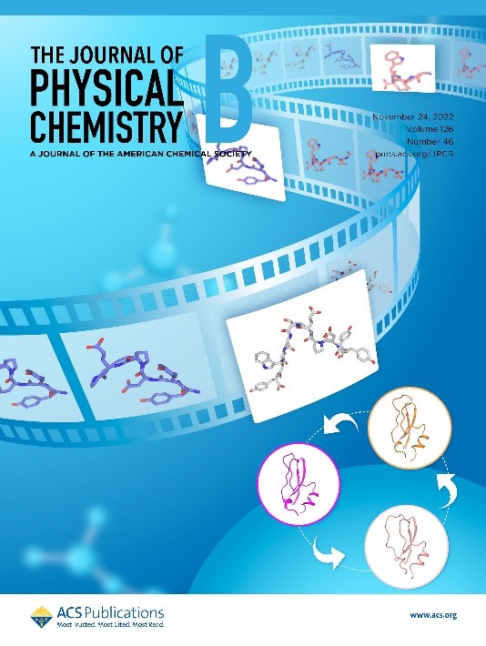

AI-powered Molecular Dynamics Simulation
AI-powered Molecular Dynamics Simulation
Articles

AI²BMD: efficient characterization of protein dynamics with ab initio accuracy
Wang T#*, He X#, Li M#, Wang Y#, Wang Z, Li S, Shao B, Liu T. bioRxiv, 2023.07, 12.548519.


AIMD-Chig: Exploring the conformational space of a 166-atom protein Chignolin with ab initio molecular dynamics
Wang T#*, He X#, Li M#, Shao B*, Liu T. Scientific Data, 10 (1), 549.

# for equal contribution
* for corresponding authors